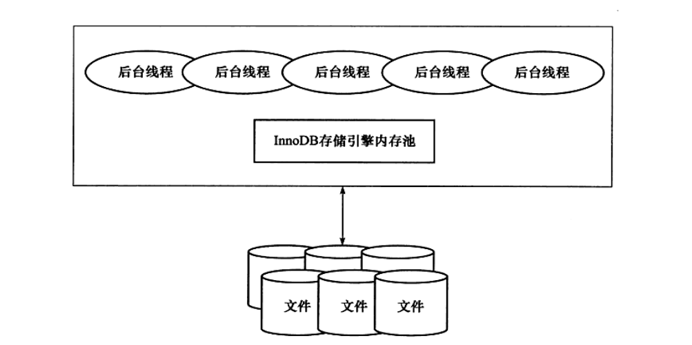

innodb
Table of Contents
1 DONE part 1 mysql体系结构和存储引擎
1.1 innodb
- 支持事务 - 特点(行锁,外键) - 插入缓冲,二次写,自适应哈希索引 - 如果没有显示定义主键,innodb会为每一行生成6byte的rowid 作为主键
1.2 MylSam
- 不支持事务,表锁. - 支持全文索引
1.3 Ndb
1.4 memory
- …
2 TODO InnoDb 存储引擎
2.1 detail
Mysql 5.5 开始默认的表存储引擎 第一个完整支持ACID事务的存储应请 特点是行锁,支持MVCC(多版本并发控制) 支持外键,提供一致性非锁定读
2.2 体系架构

如上如,多个内存块组成内存池 1 . 维护进程/线程需要访问的多个内部数据结构 2 . 缓存数据 方便读取 3 . redo log 缓冲 后台线程的主要作用是 负责刷新内存池中的数据
2.2.1 后台线程
- Master thread
负责将缓存池中的数据异步刷新到磁盘保证数据一致 (脏页的刷新,合并插入缓冲,undo页的回收)
- Io thread
处理io的call back (write,read insert log) show engine innodb status 来观察 innodb 的io thread insert 的 线程id 为 0 log thread 为 1 剩下的就是读写线程 读线程id 总是小于写线程id
- Purge Thread
事务被提交后,所使用的undolog 可能不再需要 所以需要这个线程来回收已经使用并分配的undo页 innodb_purge_threads=1 启用独立的purge thread 后续版可以支持多个,进一步加快undo 的回收 离散读取undo页 进一步利用磁盘的随机读取性能
2.2.2 内存
- 缓冲池
innodb 是基于磁盘存储的,所以cpu和磁盘速度的鸿沟 基于磁盘的数据库系统通常使用缓冲池来提高数据库性能 简单来说是一块内存区域,通过内存来弥补磁盘速度慢对数据库的影响 读取页-->磁盘读到的页放在缓冲池(页"FIX"在缓冲池)(LRU列表) 下一次直接读取相同的页 缓冲池的大小直接影响数据库的整体性能 show variables like 'innodb_buffer_pool_size \G 下图为innodb内存的结构情况
可以设置多个缓冲池实例, show variables like 'innodb_buffer_pool_instances' \G;
- 重做日志缓冲
show variables like 'innodb_log_buffer_size '\G; 可以查看重做日志缓冲池的大小 以下情况会重做日志缓冲中的内容刷新到外部磁盘的重做日志文件中 1 . Master Thread 每秒将重做日志缓冲刷新到重做日志文件 2 . 事务提交时会重做日志缓冲到重做日志文件 3 . 当重做日志缓冲池剩余空间小于1/2时...
- 额外的内存池
额外的内存池,在innodb存储引擎中,对内存的管理是通过内存堆(heap)的方式进行的 对数据结构本身的内存进行分配时,需要从额外的内存池进行生情,当该区域的内存不够时 会从缓冲池中进行申请,例如,分配了缓冲池 innodb_buffer_pool.在增加g缓冲池大小时 也应该注意 缓冲池重的帧缓冲 frame buffer 还有对应的缓冲控制对象 buffer control block 他们记录了如 lru 锁 等待信息等, 也需要从额外内存池中申请, 所以在增加innodb缓冲池时 也应该考虑增加这个值
2.2.3 checkPoint 技术
缓冲池为了协调 cpu 和 磁盘速度的鸿沟,因此页的操作首先都是在缓冲池中完成的 加入一个语句 update 或者 delete 改变了页中的数据,现在页是脏的, 即缓冲池中的页的n版本要比磁盘新 但是如果每个页变化就把变化页刷新到磁盘,开销是很大的,而且如果在过程中宕机, 数据就无法恢复了,为了避免此问题,现在事务数据库都才用了 write ahead log 当事务提交时,先做日志,再修改页,如果宕机导致数据丢失,事务提交失败,也可以重做日志 完成数据的回复,这也是acid中 D 持久化的要求 如果重做日志可以无限增大, 缓冲池也足够大,能缓冲所有数据,也就可以通过重做日志回复整个系统宕机前 1 . 缓冲池可以缓冲数据库中所有的书 2 . 重做日志可以无限增大 没有上限 3 . 重做日志 如果库很大的话 ,恢复会很久 -- 所以 checkpoint 为了解决这些问题 1 . 缩短数据库的恢复时间 2 . 缓冲池不够用的时候,把脏页的数据刷新到磁盘 3 . 重做日志不可以用的时候,刷新脏页 在数据库发生宕机的时候,数据库不需要重做所有的日志,因为checkpoint之前的也都已经 刷新回磁盘,所以数据库只需要对checkpoint后的重做日志进行回复,这样就大大缩短了回复时间
3 番外
3.1 Mvcc
mvcc 多版本并发控制
使用undo log 来进行
开启事务 , 会将要操作的数据备份到undo log(原子性)
redo log 是修改后数据的备份(持久性)
如果rollback 就使用undo log 恢复
1 . 操作前备份为 undo log 修改后 备份为 redo log
2 . 事务结束前 将数据写入到磁盘, 提交事务,数据就会持久化
3 . undo log 会先与数据持久化到磁盘,这样就算提交事务失败, 也可以rollback
4 . undo redo 虽然通过缓存 减少了写数据的io 但是 又要写read log 的io
所以为了提高性能 read log 存储在连续空间 批量写入 追加 并且即使回滚也不会删除
3.2 LRU列表
latest recent used 最近最少使用 LRU列表用来管理已经读取的页,当数据库刚启动时,LRU列表是空的 这时页都存在Free列表中,后续从free列表中删除放到LRU 列表中 可以通过 show engine innodb status\G;来查看lru 和 free列表状态 pages made young 显示了lru 列表中 页移动到前端的次数
这个指令显示的是过去某个时间范围内 innodb 的状态 如下 显示的是过去6s